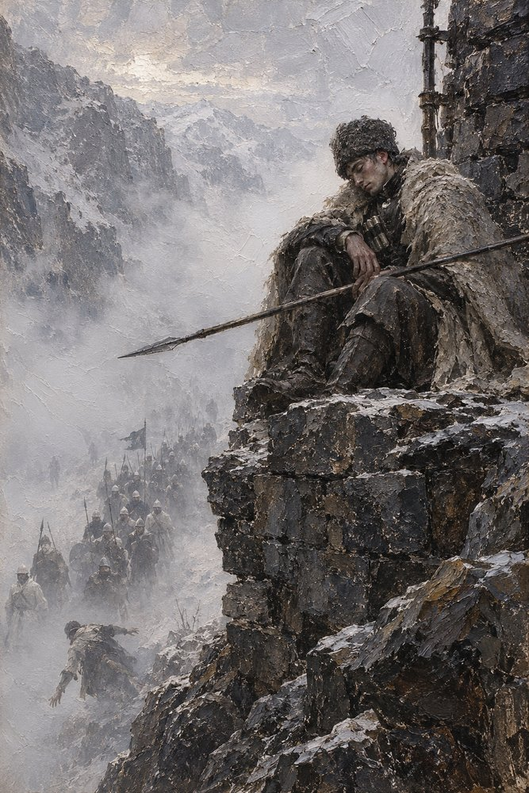

Record 9 of 14
The best sleep of his life
In Lorren of the twenty-ninth year the sentry Gela, thirty hours on the parapet of the Dzaleti tower in a wind off the snow, sits down with his spear across his knees when the fog arrives and the wind stops, and closes his eyes for a moment. The army of the Sword passes through the pass below him like a rumour, losing two hundred and ten men over the unseen edge of the road, and finds him asleep; he will call it the best sleep of his life.
A young soldier in a fur cap and a shaggy hide cloak sits asleep on a high stone parapet with a spear across his knees and his chin on his chest, in a grey, snow-dusted gorge; below him in the mist a column of helmeted soldiers with spears and a dark banner winds along a ledge, and one man at the lower left is falling or sprawled over the edge.